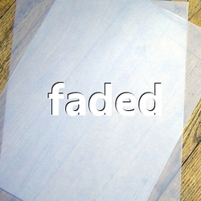
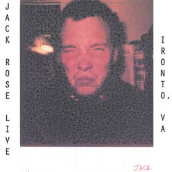

Various - Usenet: Mind / Body (1994)
Austere - Convergence (1998)
Pelt - Empty Bell Ringing in the Sky (1999)
Austere v. In The Now - distance (2000)
Austere - Curio (2000)
Pelt - Rob's Choice (2000)
Jack Rose - Portland, OR (2001)
Charalambides - The Work Of Glaciers (2001)
Bill Horist & KK Null - Interstellar Chemistry (2002)
The Mystifying Oracle - quintesscense (2002)
Greg Headley - A Bulletin on Vertigo (2003)
Various - Chickenhed Comp (2003)
Charalambides - IN CR EA SE (2003)
Christina Carter - Bastard Wing (2003)
Music for Seances series (2003)
The Circus Of The Scars - Home Is Where The Hurt Is (2003)
Austere - Remission (2003)
Greg Headley - It Can Leave, It Must Leave (2004)
Austere - Curio reissue (2004)
Austere v. Abstract Audio Systems - evergone (2004)
The Goa Constrictor - Vs. Eminem (2004)
Austere - Remittance (2004)
Freq. Magnet - Principium Somniferum (2005)
The Legendary Pink Dots - Poppy Variations (2005)
Friday Group - Friday Group (2005)
Friday Group - Friday Group picture disc (2005)
irr. app. (ext.) - Perekluchenie / Resurrection Of The Senses (2005)
Green Milk From The Planet Orange - City Calls Revolution CD (2006)
Rick Reed - Ghosts of Energy (2005)
Thighpaulsandra - Double Vulgar II (2005)

Austere v. Stephen Philips - faded (2005)
Ariel Kalma - Osmose (2006)
Freq. Magnet - Principium Somniferum DVD (2006)
Soriah - Chao Organica In A Minor (2006)
Green Milk From The Planet Orange - City Calls Revolution 2xLP (2006)
The Mystifying Oracle - The Kiffed EP (2006)
Lena - Alchemy Of Fingers And Dark (2007)
Jack Rose - Live at Routure, 2007 (unreleased)
Freq. Magnet - Étoiles Du Couvercle (2007)
The Goa Constrictor - Bag Scraper mix (2007)
Junior Makhno - The Theatre Of The Macabre (2007)
DJ Manx (Dave Clark) Memorial DVD (2007)
Austere - Solyaris (2008)

Jack Rose - Live in Ironto, VA (2008)

Jasno - Mood Muzac mix (2008)
Austere - The Sound of Silence (2008)
Kundabuffer - Interference (2008)
Ron Johnson - Flute Works (2008-2010)
Various - ChickenHed Vol. 1: ÜbërFöwl, DumbClucks & Feathered Fiends (2009)
Kundabuffer - Second Serving (2009)
Freq. Magnet - Nicked (2010)
Freq. Magnet - Bass, Drones & Wash (2012)
Freq. Magnet - 92 Suitcases (2015)